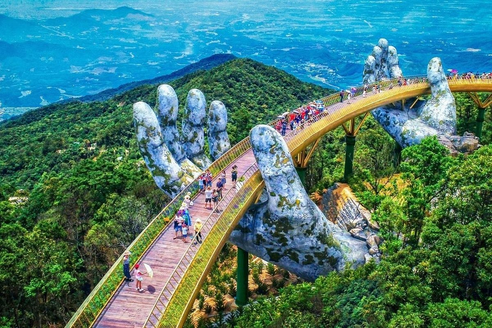

It is an arch bridge and one of the oldest of this type still used by the local
population. In Mycenaean (last phase of the Greek Bronze Age from 1600 - 1100 BCE) times, the Arkadiko
Bridge served as a highway between the cities of Tiryns and Epidauros.
The Tarr Steps
The Tarr Steps are an ancient clapper bridge (bridge form mostly found in the
moors of Devon, England) located across the River Barle in Exmoor National Park in Somerset,
England.
Caravan Bridge
Caravan Bridge is the oldest datable bride in the world still in use. This
ancient arched stone slab bridge was built sometime around 850 BCE in Izmir, Turkey.
The Pons Fabricius
The Pons Fabricius or Ponte dei Quattro Capi, is the oldest existing Roman bride
in its original state. It was built in 62 BCE and spans half of the Tiber River. Pons Fabricius is 62
m (203 ft) long and 5.5 m (18 ft) in height.
Alcántara Bridge
The stone arch bridge was built over the Tagus River after the Roman Emperor
Trajan issued an order in 98 CE. Construction of Alcántara Bridge began in 104 CE and ended two years
later.
Ponte Sant'Angelo Bridge
Ponte Sant'Angelo Bridge is one of the most famous Roman bridges in the world
completed in 134 CE. The bridge's most distinctive feature are the numerous angel statues standing on
the bridge's pillars.
The Cendere Bridge
The Cendere Bridge is a Roman bridge dating from the late Imperial Roman period.
It is located near the ancient city of Arsameia in southeastern Turkey. While an older bridge may have
existed in the same spot, the current Cendere Bridge is dated to around 200 BCE.
Band-e Kaisar
The Band-e Kaisar of Bridge of Valerian was a Roman stone arch bridge built in
what is now Shushtar, Iran. At the time it was built, around 260 - 270 CE. The bridge/dam was the most
eastern Roman bridge/dam, lying deep in Persian territory.
Limyra Bridge
The Bridge near Limyra is a relatively unknown, yet unique stone bridge - it is believed to be one of
the oldest segmented arch bridges in the world. The bridge is located near the ancient city of Limyra
and is the largest civil engineering structure of antiquity in the region.
Karamagara Bridge
The Karamagara Bridge was built sometime in the 5th or 6th century during the
era of the Byzantine Empire. The bridge consisted of a single pointed arch and is possibly the
earliest known example of a pointed arch bridge.
Bridge of Dezful
The Old Bridge of Dezful in southwestern Iran, also known as "Rumi Bridge", is
one of Khuzestan's most treasured monuments. Dating back to AD 260, it's thought the bridge was built
by Sassanid King Shapur II
Zhaozhou Bridge
Zhaozhou Bridge is also known as the Anchi or Anji bridge has been used to
cross the Xiao River since around AD 605. Constructed using limestone during the time of the Chinese
Sui Dynasty.
Rialto Bridge
the 16th-century Rialto Bridge, or Ponte di Rialto, is the oldest bridge in
Venice. It crosses the narrowest point of the Grand Canal and the present structure was designed by
Antonio da Ponte and his nephew in 1591.
The Mill Pond Bridge
The Mill Pond Bridge is triple-arched structure, Dating back to the 1820s. It
was built using random field stones and is a treasured part of the Bridgepoint Historic
District.
Richmond Bridge
Richmond Bridge in Tasmania is it the oldest stone archway bridge still standing in Australia,
Completed in 1825 by prisoners of the nearby Richmond Gaol. very few repairs have been carried out in
its 200-year history.
Ayub Bridge
The Ayub Bridge, located in Rawalpindi, Pakistan, spans the River Jhelum and is a crucial
transportation link between various
parts of the city. Named after President Ayub Khan, it supports vehicular traffic with its concrete
and steel construction.
The bridge facilitates efficient movement and economic activity in the region, reflecting significant
infrastructural development
during Ayub Khan's era.

Golden Bridge
The Golden Bridge is situated in the Ba Na Hills, near Da Nang, Vietnam. It is positioned at an
elevation of approximately 1,400 meters (4,600 feet) above sea level.The Golden Bridge in Vietnam is a
remarkable architectural feat known for its visually striking design, including its giant supporting
hands.
Attock Bridge
The Attock Bridge, completed in 1883, spans the Indus River near Attock, Pakistan.
It was an engineering marvel of its time, connecting the Punjab region with the Khyber Pakhtunkhwa
region and facilitating trade and travel.
The bridge, designed by Sir James L. MacDonald.